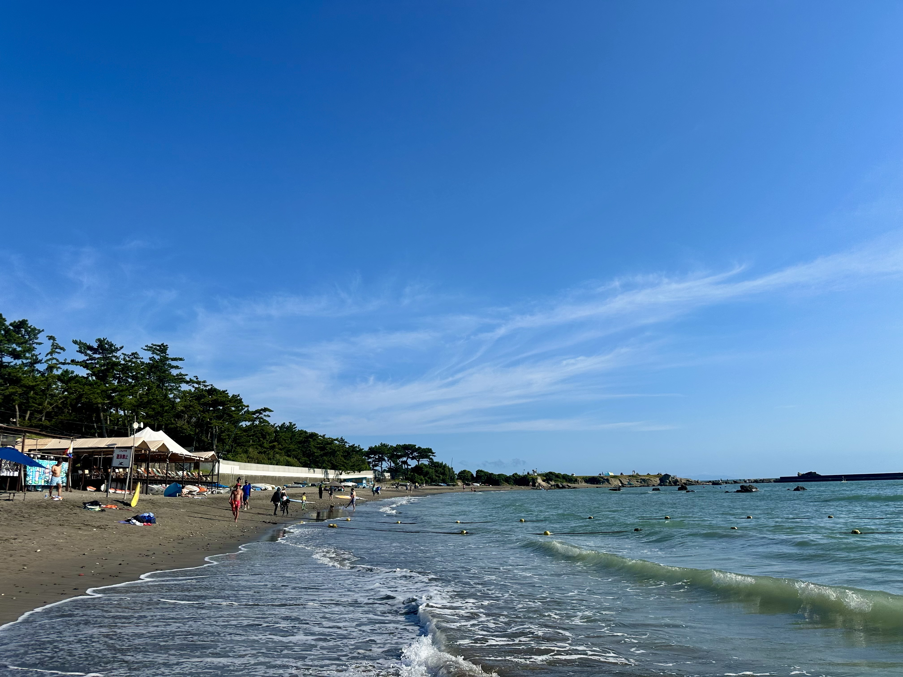
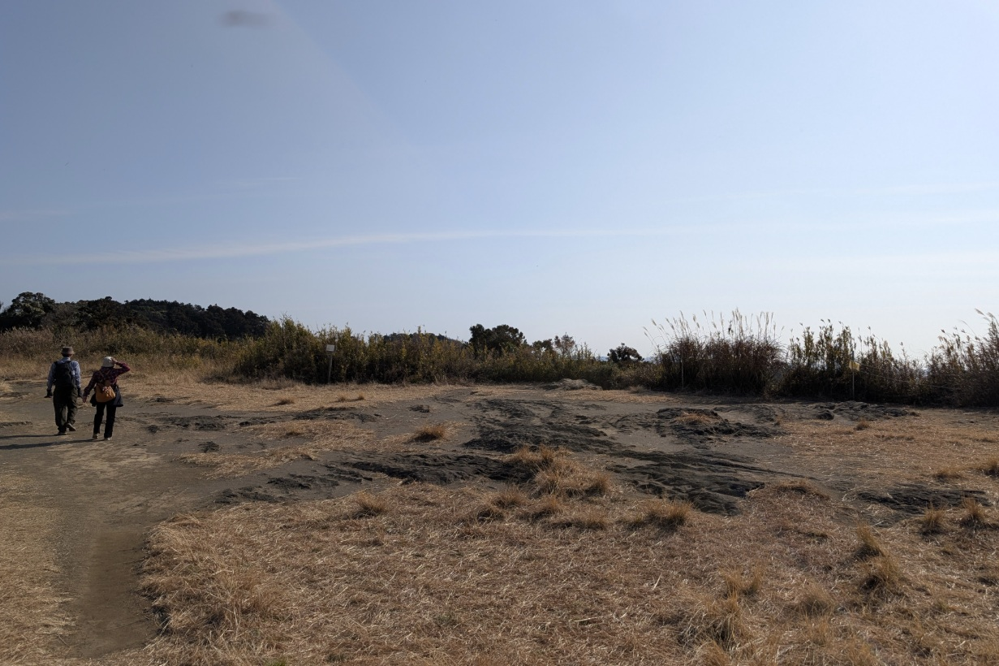
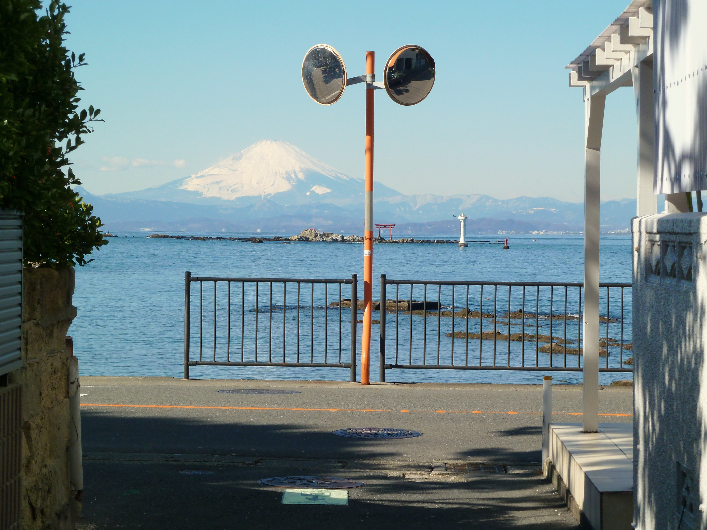

地域の魅力を次の力に

神奈川県の2025年の推計では、葉山町の年間の延べ観光客数は606,752人です。 このうち日帰り客は570,523人で、全体の約94％を占めます。また、7月と8月の 2か月間で年間の約30.5％が訪れており、月によって来訪の規模に違いがあります [1]。
出典：神奈川県 観光客実態調査（2025年推計）[1]
同じ統計による観光客消費額は、年間で約48.3億円と推計されています。これは 町の税収ではなく、観光客による宿泊、飲食、その他の消費の推計額です [2]。私は、こうした数字を踏まえ、訪れる 人数だけでなく、町内の店や事業者にどのような機会が生まれているかを大切にしたいと 考えています。
目指したいのは、夏にさらに人を集中させることではありません。海・山・スポーツ・ 富士山の景色を、交通、買い物、ふるさと納税につなぎ、季節を通じて葉山と関わってもらう ことです。

海ではビーチランやビーチスプリント、ウイングフォイルなど、山ではトレイルラン、さらに 横須賀市との連携も視野に入れた湘南国際村でのヒルクライムなどを、地域活性化の構想として 考えています。
ただし、大会を開いて参加者が帰るだけでは、町全体への広がりは限られてしまいます。競技の 前後に地元で食事をする、同行する家族が体験プログラムを楽しむ、地域の店で買い物をする。 そうした過ごし方まで、事業者の皆さんと一緒に組み立てたいと考えています。
複数の競技や企画をつなぐ「ハヤマキング」のような仕組みも一案です。一度に大規模な大会を つくるのではなく、既存の活動との連携や小規模な試行から始め、安全管理、住民生活への 影響、参加店舗の売上などを確認しながら育てます。
開催する時期も、競技の安全性と自然環境への配慮を優先しつつ、夏以外に訪れるきっかけを つくる視点で検討します。

富士山の景色は、眺めて終わるだけでなく、地域の活動やものづくりにつなげたいと考えて います。
例えば、「白富士・青富士・赤富士」をテーマにしたフォトコンテストを開き、応募作品を 町内の飲食店や商店で展示する。写真を見に店を巡ったり、気に入った景色を探して再び 葉山を訪れたりする仕組みを構想しています。作品の利用については作者の了承を得たうえで、 地域の商品や記念品への展開も事業者と検討します。
スポーツに参加する人、写真を楽しむ人、散策や食事を楽しむ人。それぞれの楽しみ方が、 町内のさまざまな場所や人との出会いにつながる企画を目指します。
京急にはすでに、電車・バスの移動と、食事、体験や土産を組み合わせた「葉山女子旅きっぷ」 があります。新しい仕組みを一からつくるだけでなく、こうした既存の取り組みを生かした 連携を提案したいと考えています[3]。
例えば、公共交通で来町し、少人数の海のスポーツや山歩きを楽しみ、地元の店で食事をして、 写真展示や買い物を楽しむ。移動、予約、店舗の情報を分かりやすくつなぎ、車を使わなくても 一日を過ごせる企画を検討します。
連携にあたっては、交通事業者や参加店舗にとって無理のない条件を整えることが大切です。 参加する店や体験事業者が特定の場所に偏らないよう、町内のさまざまな担い手に機会を 広げたいと考えています。
葉山町へのふるさと納税は、2024年度に2,367件、1億156万7,000円寄せられて います。また、町はすでに、特産品だけでなく地域の特色を生かした体験型の返礼品も紹介して います[4]。
私は、スポーツや町歩きで葉山を知った方が、地域の商品や体験を通じて、継続して町と 関わる仕組みを育てたいと考えています。セイル素材を生かしたサコッシュ、網を生かした 日用品、海や山での体験など、曲田自身が関心を持ってきたアイデアについても、返礼品と しての条件を確認し、地域の事業者と可能性を探ります。
寄附額を増やすことだけを目標にはしません。返礼品や募集にかかる経費も示し、地域の 事業者への発注や、自然保全・地域活動にどのような効果があったかを伝えることを 大切にします。
訪れる、体験する、地元で買う、町を応援する、そしてまた訪れる。
海・山・スポーツ・富士山・京急・ふるさと納税を別々の話で終わらせず、この流れをつくり
たいと考えています。来訪者数とともに、夏以外の利用、参加事業者への効果、再訪、交通や
環境への負担を確かめながら、葉山らしい地域活性化を目指します。
曲田 和史 KAZUFUMI KYOKUTA